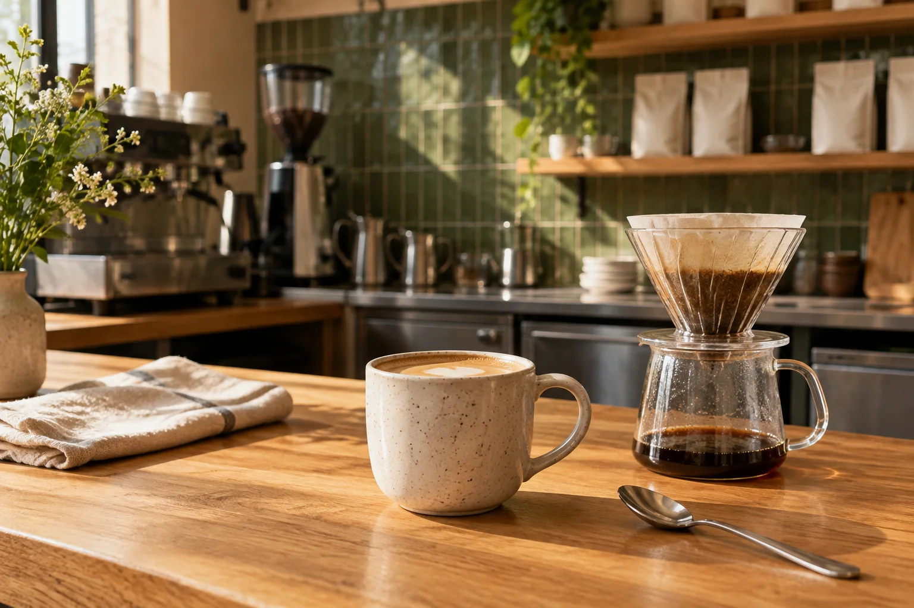

Wellington, New Zealand · since 2018
The people behind
your morning cup.
Mossline is a team of nine roasters, packers and coffee people. We keep the range small enough to know it well, and the conversation open enough to meet you where you brew.

A roastery with a counter
Some things are
better over coffee.
We started in 2018 with a house blend and a simple idea: a good cup should be easy to come back to. Today, we roast and pack three coffees in Wellington, with a tasting counter alongside the daily work.
The counter is a place to compare a cup, talk about your grinder or choose a bag. It is a small part of a working roastery, rather than a full-service breakfast cafe.
- Thursday / Friday
- 8am–1pm
- Saturday
- 9am–12pm
Fictional counter hours. This concept does not publish a real street address or accept visits or bookings.
A small range.
Plenty of attention.
Everyday Blend carries the familiar cup. Koru brings a lighter filter profile. Evening gives decaf its own place on the shelf. We taste across that range, rather than filling a menu with coffees we cannot explain.
Meet our coffeesHow the work fits together
From the roast
to your kitchen bench.
Roast to the cup.
We define the flavour and brewing role of each coffee, then use tasting and roast notes to guide the next batch. We do not trade on invented awards or scores.
Make the choice clear.
A small bag to try or a bigger bag for the household. Whole bean or a grind matched to a brewing method. The label should help you make the next cup.
Stay close to home.
Our retail range is for New Zealand home brewing. Cafe relationships focus on the Wellington region, with a scope agreed around each site's needs.
Keep the conversation going